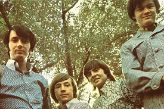

Band Biography
The Monkees are an American rock and pop band originally active between 1966 and 1971, with reunion albums and tours in the decades that followed. They were formed in Los Angeles in 1965 by Bob Rafelson and Bert Schneider specifically for the American television series The Monkees, which aired from 1966 to 1968. The musical acting quartet was composed of Americans Micky Dolenz, Michael Nesmith, and Peter Tork; and the English actor and singer Davy Jones. The band's music was initially supervised by producer Don Kirshner, backed by the songwriting duo of Tommy Boyce and Bobby Hart.
